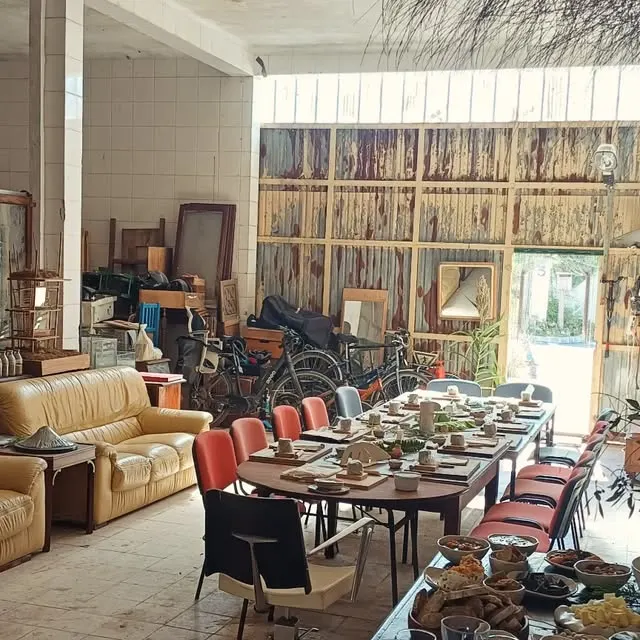
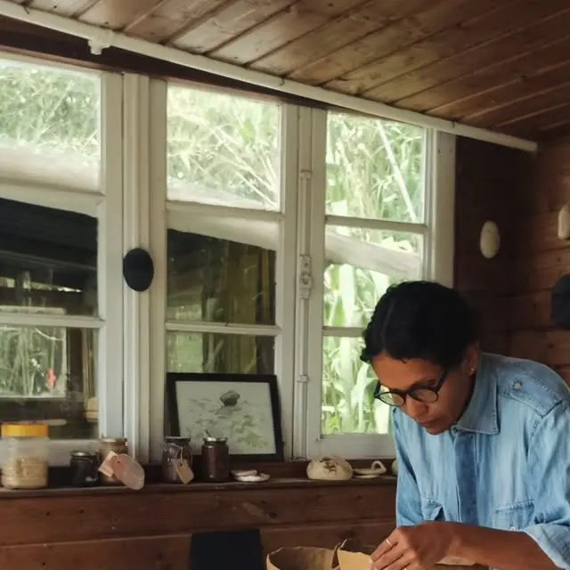
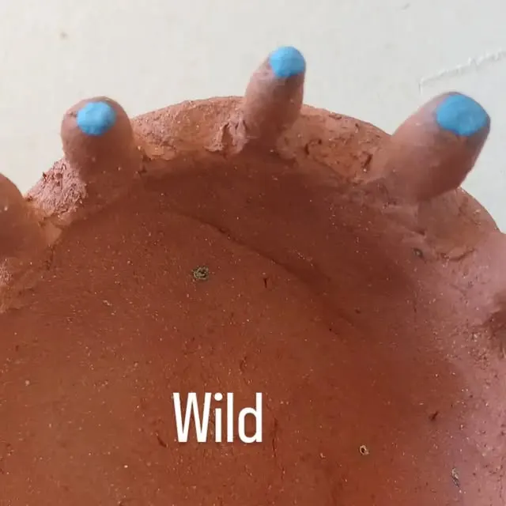

Clay dug by hand, fired by wood fire, in Sesimbra.
Gis Studio & Ceramic has worked since 2017 from a garden studio in Sesimbra, Portugal, making ceramics from wild clay collected in Azoia and the Arrábida — barro coletado — and fired in wood fire.

Wild clay, from Azoia & the Arrábida
The work starts outside the studio: clay collected in Azoia and the Arrábida hills around Sesimbra, then shaped, glazed and fired — often in wood fire, sometimes in saggar fire. The studio’s own words for the process are short ones: mão, barro, fogo — hand, clay, fire. Finished pieces go into the studio’s catalogue, shared through its Instagram.
Studio, store & workshops
Garden studio & store
A working studio and store in Sesimbra. Visits are by appointment — write first and the studio will arrange a time.
Ceramic workshops
Workshops run at the studio, including sessions that pair clay with wine and gatherings that celebrate with friends — the studio has hosted birthday celebrations in the studio too.
Pieces & catalogue
Finished work — wild-clay pieces, glazed ware and sets — appears in the studio’s catalogue and on Instagram. Ask for details of what is available now.


Visit by appointment
Gis Studio & Ceramic is in Sesimbra, Portugal. There is no online shop or booking page — the studio is reached by message, and visits are arranged by appointment.